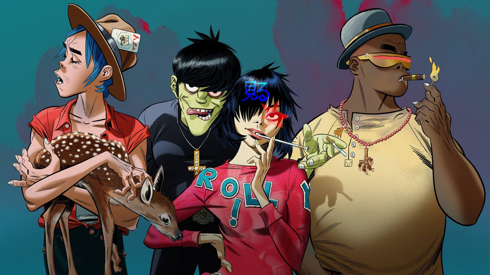

Há 25 anos, surgia o grupo Gorillaz, pelas mãos de Damon Albarn e Jamie Hewlett. Apesar de se conhecerem desde o começo dos anos 90, graças ao músico Graham Coxon, foi apenas em 1997 que a dupla começou a dividir um apartamento em Londres e, assim, deram início ao que seria o Gorillaz. Albarn é cantor, compositor, multi-instrumentalista e membro da banda Blur, já Hewlett é artista de quadrinhos e designer. Juntos, eles uniram forças e criaram o primeiro grupo de hip hop virtual do mundo.

Tudo começa com o baixista Murdoc Niccals, um satanista que veio de Stoke-On-Trent, cidade da Inglaterra. Enquanto tentava roubar equipamentos de estúdio, ele conhece Stu Pot, mais conhecido como 2D. Em vez de ser preso pelo roubo, Murdoc é “condenado” a cuidar de 2D, que ele descobre ser um bom vocalista. A dupla acabaria conhecendo o baterista Russel Hobbs, que esteve envolvido em um tiroteio e perseguição onde seu amigo Del foi morto. Del acabou possuindo o corpo de Russel, que foi sequestrado por Murdoc e recrutado para a banda. Completando a formação, a pequena Noodle, então com 8 anos de idade, viu um anúncio da banda procurando por um guitarrista. Ela enviou a si própria pelo correio, de Osaka, no Japão, até o Kong Studios. Estava formado, assim, o Gorillaz.
Damon Albarn e Jamie Hewlett começaram a trabalhar num novo projeto do Gorillaz chamado Carousel em novembro de 2007. O projeto eventualmente evoluiu para Plastic Beach. Damon teve a ideia de criar o álbum enquanto estava em uma praia próxima de sua casa: "Eu só estava olhando para todo o plástico na areia". Ele começou a gravar o material para o álbum em junho de 2008. Em 17 de setembro de 2008, Damon e Jamie anunciaram em uma entrevista que estavam fazendo outro álbum do Gorillaz.
Músicas do Album
- Plastic Beach
- Sweepstakes
- Superfast Jellyfish
- Welcome to the World of the Plastic Beach
- Orchestral Intro
- White Flag
- Stylo
- To Binge
- Cloud of Unknowing
- Some Kind of Nature
- Empire Ants
- Glitter Freeze
- On Melancholy Hill
- Rhinestone Eyes
- Pirate Jet
- Broken